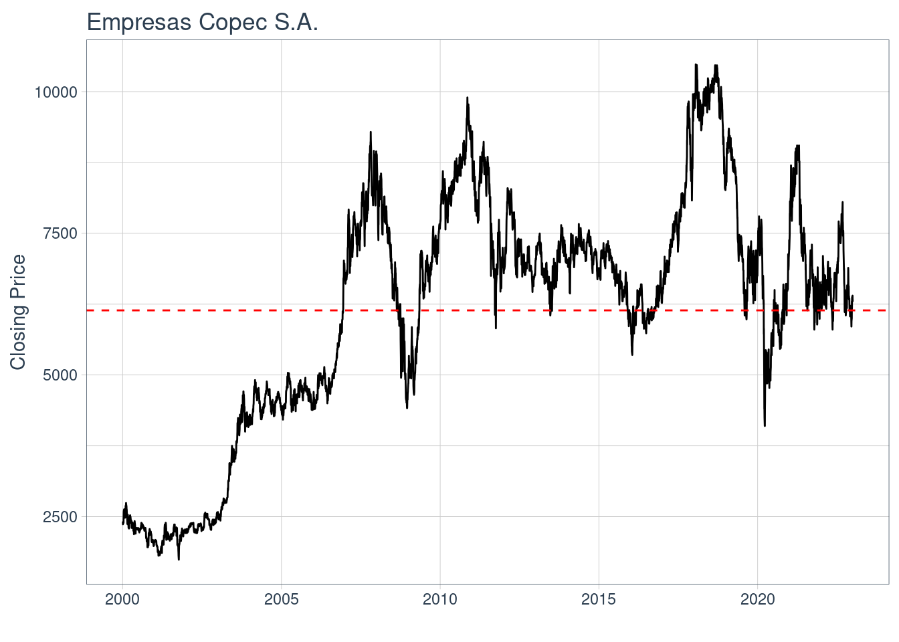
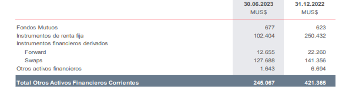

Gestion Financiera Hito 1
Definición
La industria energética a nivel mundial es una de las más grandes del mundo, ya que, para todas las actividades de hoy es necesaria, desde cargar el celular hasta ir al trabajo en auto, inclusive para alimentarnos necesitamos energía para calentar o preparar las comidas.
Existen muchos tipos de energías tales como eléctrica, eólica, térmica, gas natural, fósil, etc. Esta última ha tenido diversos avances a lo largo de los años desde que se descubrió a fines del siglo XX. Actualmente esta energía mueve buques, aviones, autos, entre otros lo que la hace una de las energías más ocupadas en la actualidad, sin embargo, estos últimos años se ha puesto en duda sus grandes beneficios que nos otorga debido a la gran cantidad de contaminantes que emite al medio ambiente, el cual es el principal causante del calentamiento global
Como se puede ver en este reciente paper “Hierarchical optimal scheduling method for regional integrated energy systems considering electricity-hydrogen shared energy” publicado el 2022, el cual habla de la posibilidad de disminuir el consumo de energía por medio de almacenamiento de hidrogeno lo que a su vez también beneficia al medio ambiente, las personas están buscando nuevas fuentes de energía poniendo como punto importante que sea amigable con el medio ambiente y rentable. (Link: https://www.webofscience.com/wos/woscc/full-record/WOS:001046995700001)
Es por esto que las empresas de todos los sectores están reconociendo este nuevo enfoque de la sociedad lo que los hace tomar medidas tales como procesos de reducción de emisiones de carbono. Para el caso de las empresas que proveen energías a las personas dicho cambio social es mucho mas importante aún
El activo Empresas Copec S.A. tiene un valor promedio para el intervalo igual a 6140
Motivación
Para el presente trabajo se escogió la industria de energías debido a los puntos expuestos anteriormente. Esta industria está en constante cambio debido a los avances tecnológicos y sociales que hay en el mundo. Claro ejemplo de cambios es Empresas Copec S.A. la cual ha ido transformándose a lo largo de los años a ser una empresa mas amigable con el medio ambiente junto con ser la primera en servicios.
Empresas Copec S.A. fue fundada en 1934 con el objetivo de abastecer a los chilenos de combustible, el cual era escasos en esos años. Luego de alrededor de 90 años, Empresas Copec esta en diversas industrias a nivel nacional donde destaca en el sector energético. Esta empresa es dueño de otras empresas como Copec, Abastible, Terpel, entre otras, las cuales también están en la industria energética. Se puede destacar que esta empresa a través de sus filiales esta presente en más de 80 países lo que la hace ser una empresa consolidada a nivel internacional.
Copec es una de las tres empresas más innovadoras de Latinoamérica, lo que no es menor, ya que debe competir con otras empresas muy grandes como lo es Petrobras, por ejemplo. Ejemplo de sus innovaciones son los 10 millones de USD que invirtieron en un startup extranjero que creó tecnología para poder extraer agua del aire. Ambos artículos los podemos ver en ” Copec se ubica entre las tres empresas mas innovadoras de Latinoamérica” Link: https://www.empresascopec.cl/noticia/copec-se-ubica-entre-las-tres-empresas-mas-innovadoras-de-latinoamerica/ y “Copec invierte US $10 millones en startup estadunidense que creo tecnología para extraer agua del aire” Link: https://www.df.cl/df-lab/innovacion-y-startups/copec-invierte-u-10-millones-en-startup-estadounidense-que-creo
Por estos motivos es de sumo interés analizar a Empresas Copec S.A. en el presente trabajo
Contexto
Un activo que influye respecto de las acciones de Empresas Copec S.A. es el precio del barril de petróleo brent, el cual es el petróleo crudo que compra ENAP y se lo vende a Empresas Copec S.A debido a que ENAP es el único ente que tiene permitido vender el petróleo a nivel nacional, el cual debe ser al mismo precio a todas las empresas en Chile.
Grafico 1: Evolucion precio del petroleo

El precio del barril de petróleo cerró en 93,94 USD el cual es un precio algo alto comparando a inicios del 2023 el cual estaba en 84,36 USD. Este depende de muchos factores como oferta, demanda, políticos, economías globales, tratados, etc. Si el precio del barril sube ENAP lo debe comprar más caro y por ende se lo vende mas caro a Empresas Copec S.A el cual incurre en más gastos y por ende es menos rentable.
Otro activo que influye en la acción de empresas Copec S.A. es el tipo de cambio del USD, ya que, Empresas Copec S.A exporta muchos de sus productos especialmente de su industria de celulosa a otros mercados, por lo que al aumentar el tipo de cambio se pierden diversos millones debido al gran volumen que venden el cual es de 3500 clientes en 223 puertos internacionales.
Grafico 2: Evolucion cambio USD/CLP

Por ultimo y no menos importantes el es precio del gas natural, el cual esta en 2.907 USD/MMBtu. Empresas Copec S.A a través de su filial Abastible provee de Gas a los hogares de Chile para calefacción, cocinar o el calefont. Este activo en este momento ha ido bajando progresivamente debido a una gran alza que tuvo meses atrás lo que es bueno para Empresas Copec S.A. ya que, ya no deberán paga tanto para tener stock de gas y podrán ir bajando sus precios progresivamente.
Grafico 3: Evolucion precio del gas natural

Análisis de Largo Plazo
Caracterización deuda
Empresas Copec S.A cuenta con una estructura de capital como lo señala la siguiente tabla1
Tabla 1: Estructura capital Empresas Copec S.A

Destaca la cantidad de bonos que tienen los cuales son alrededor de un 30% de la estructura de capital, lo que es alto sin embargo al ser bonos a muy largo plazo no genera tanta incertidumbre. Esto lo podemos ver en su reporte de estado de resultados donde dice “…Existen a su vez préstamos de largo plazo a tasa fija con Empresas Copec, uno por MUF 2.470, otro por MUF 5.344 y el último por MM$ 67.840; el primero expira en octubre de 2024, el segundo en noviembre del año 2030 y el tercero el 15 de septiembre de 2023…”
Además, cuenta solo con acciones comunes con un total de 1.299.853.848 como lo dice la siguiente tabla 2
Tabla 2: Acciones Empresas Copec S.A

Donde cada acción tiene un precio de 6.308 CLP. Al contar solo con este tipo de acciones debe pagar dividendos a todos sus accionistas sin tener que pagar antes a los accionistas preferentes, debido a que no tienen acciones preferentes que los obliguen a pagar dividendos primero a estos inversores.
Caracterización de emisiones históricas (Aplicación cap. 20)
Empresas Copec S.A. se abrió en bolsa en después de meses haciendo conferencias previas a la suscripción donde se empezaba a analizar cuanto necesitaba recaudar junto con que tipo de acción se iba a lanzar a la bolsa. Luego de tener esto claro Empresas Copec S.A presentó su declaración de registro la cual fue aceptada ya que esta tenia toda la información financiera y administrativa necesaria. Luego de ser aprobado la empresa se abrió a bolsa el 19/04/1987 donde fue necesario fijar un precio inicial, el cual no se logró encontrar, sin embargo, el precio más antiguo que se logró encontrar fue de 1993 en septiembre el cual fue de 718 CLP. Tras esta primera apertura Empresas Copec S.A sacó nuevas acciones al año siguiente, todas sus emisiones han sido de acciones ordinarias
Imagen 1: Logo Copec 1987

Relación con activos derivados
Respecto a los derivados Empresas Copec S.A. si los tienes los cuales son los siguientes descritos en la tabla 3
Tabla 3: Derivados

Donde se puede observar que cuentan con 12 mill millones de US en forward y 127 mil millones de US de swaps. Estos se ocupan para disminuir la incertidumbre del mercado. Para el caso de los Swaps, estos son instrumentos financieros que diminuyen el riesgo al tipo de cambio el cual surge de tener deuda en otra moneda que no sea la chilena.
Reporte grupal
Luego de analizar las industrias de energia, banca e inmobilaria y sus respectivas acciones especificas las cuales son Empresas Copec S.A, Banco Santander - Chile y Cencosud se llegó a la conclusion que las ponderaciones deben ser 40% Empresas Copes S.A, 30% Banco Santander - Chile y 30% Cencosud. Esto debido principalemente a las nuevas tecnologias que hay en el sector energetico las cuales avanzan cada vez más rapido, a esto se le puede agregar que Chile es un posible potencial del hidrogeno verde gracias a sus grandes vientos en el sur y su gran costa que le da el recurso del agua el cual es necesario para dicho proceso. Además se espera que Chile exporte Hidrogeno verde de aca a 20 años lo que le da una gran oportunidad a Empresas Copec a meterse en este nuevo modelo de energia, y tal como se sabe, esa empresa vela por el medio ambiente y energias sutentables.
Cencosud es una empresa muy prestigiosa que atrae a muchos clientes. Ademas, esta en muchos negocios distintos por lo que da una amplia cartera para que inversionistas puedan comprar las acciones diversificando su riesgo. Por otro lado, tiene una alta presencia en Latino America, lo que proporciona una entrada a un mercado amplio y diverso. Además tiene una gestion financiera prudente, que le da la posibilidad de un correcto manejo de deudas, liquidez y buena rentabilidad. Es por esto que tiene una alta probabilidad de tener una rentibilidad positiva, la cual es bien respaldada por el exito de la empresa y el correcto manejo de decisiones estrategicas y una adaptacion constante, lo que respalda el 30% de peso asignado a esta accion
Banco Santander es una inversión atractiva y segura debido a su alta capacidad de solvencia y por sus retornos promedio históricos positivos durante los periodos de crisis. “Santander gestiona el riesgo de liquidez utilizando una cartera de activos líquidos para garantizar que el Banco mantenga siempre suficiente liquidez para cubrir las fluctuaciones a corto plazo y el financiamiento a largo plazo, cumpliendo con los requisitos normativos internos de liquidez”. (Fuente: Información Financiera Santander Chile, 2023) Además, sus inversiones están altamente diversificadas para mitigar riesgos y tener una cartera estable durante el tiempo. A continuación se muestran las principales inversiones del banco en el siguiente gráfico:
Grafico 4: Inversiones Banco Santander

En conclusion las 3 acciones van a rentar a largo plazo pero creemos que la industria de energia especificamente Empresas Copec, es la accion que mas va a generar retornos. Además al otorgar 30% a las otras dos acciones se estaria diverificando el riesgo en caso de enfretar adversidades en Empresas Copes S.A.
HITO 2
Aplicación Black-Scholes
Se valoriza correctamente una opción de compra del activo principal definido en el Hito 1, utilizando el modelo de Black-Scholes continuo apoyándose de un código replicable que compute el modelo. Se apoya de literatura para complementar su valorización.
[*********************100%%**********************] 1 of 1 completed
[*********************100%%**********************] 1 of 1 completed5.20812513161944Modelo Adicional de valorizacion
Se explica junto con descripcion matemática (fórmulas) correcta un modelo alternativo para valorizar la accion haciendo revisión de literatura cientifica con tal de hacer una referencia a un artículo del modelo.
Aplicacion modelo adicional
Se aplica el modelo alternativo apoyandose de un código replicable que computa el modelo.
Análisis de contraste de ambos modelos
Se realiza una comparación de los resultados de ambos modelos de valorización explicando sus similitudes y diferencias.
Reporte Grupal: Caso Administración
Se eligen uno de los siguientes casos con tal de replicar y responder sus preguntas de acuerdo al activo principal elegido:
Caso Administración de Capital de Trabajo de Keafer Manufacturing de la página 822 del ROSS.
Caso Administración de Efectivo de Richmond Corporation de la página 845 del ROSS.
Caso Administración de Efectivo de Braam Industries de la página 874 del ROSS.